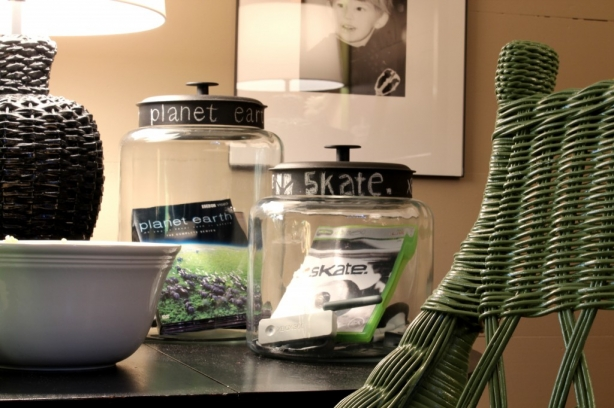
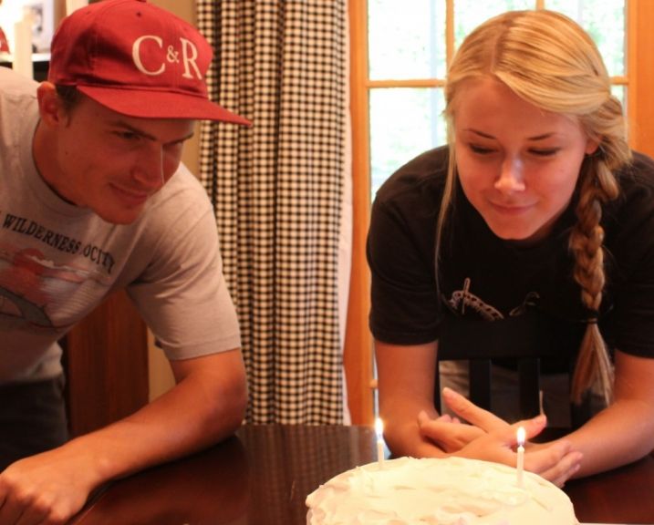
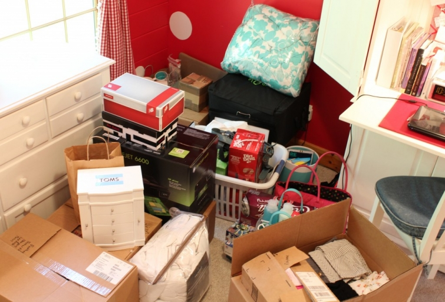

.png)
.PNG)
.PNG)
.PNG)
.PNG)
.PNG)
.JPG)
.JPG)
.PNG)
.PNG)



Since we’ve been talking about playrooms, I hope you had some time to play this August weekend. We did. Our daughter and son had birthdays that were bookends on both sides of the it. We celebrated with delicious Italian food on Friday night and my mom’s divine homemade tiramisu cake on Saturday.

Now we get to play some more…college move in day. It is work, but it is also play for me when you finally get to help decorate a girl’s dorm room. 🙂 (This is NOT the dorm…this is her bedroom.)
and that’s not all of it….
Alright, let’s talk about the playroom a little more. I found a before picture to show you the blue sofa! It was a little smooshed at the time of this photograph, and the room had a wild PBKids rug that was later sold in a yard sale.

the before

the after
If you haven’t read all about the after, you can do it here. I think I am supposed to be telling you about the playroom organization today, aren’t I? Let me explain the domino effect that went on here then. Do you remember this buffet piece from the dining room before we took out the wall behind it? Well, once the wall was gone I had no place to put that beautiful piece of furniture. I thought long and hard about another spot for it to go, but there was really nowhere else to send it, and I did not want to sell it. It could have gone in the greatroom, but it was too short to be in scale next to the very tall bookshelves.

It finally occurred to me that it would be perfect for holding the television, the vcr, the game systems, and all the assorted video games and movies that were being used in the playroom. But alone, it would not hold all of it. (And the entertainment piece in there wasn’t big enough to hold it all either.) So my bright idea was to use a hutch that my husband had built to top a huntboard and put it on top of the buffet. Not perfect – but certainly workable for a playroom. The only problem with that idea was this piece was built of cherry, and the hutch was pine. I had to paint them for it to work. So I did. I know…what a terrible thing to do to that beautiful buffet.

But it really works great for our playroom organization now. The game systems, games, and dvd’s are all housed in the baskets, drawers, and behind cabinet drawers. Everything is labeled – most with tags made from trading card protectors that have black cardstock inside – all written with chalk and tied on with ribbon.
Here’s a recap of the domino effect..the huntboard that lost its hutch went to my mother-in-law. The entertainment piece that was in the playroom moved to the greatroom since it was a taller piece. The old buffet with its newly matching hutch went to live in the playroom – all decked out in green baskets because….

If the throw pillows were green, the wicker chair needed to be green…

which made me paint the chalkboard frame green, which in turn made me paint the curtain rod green and the closets green…and that made me paint the storage baskets green.
Got all that?
But that’s not the end of If you Give a Girl a Fabric…

You see, having all those green baskets made me decide to paint yet another chalkboard frame green…
and accessorize the bookcase you see as you enter the playroom from another door with more green.

And that brings us to the end of our story of the playroom. Here’s something funny to note. The pillows that started it all? Well, they have been replaced with new ones. (But they ARE green. 🙂 ) And since I have sprinkled a few shots of Christmas between this post and my other post on the playroom, I will leave you with one more taste of the holiday season. This is from last Christmas (not the year Layla and Kevin were here.) I always take down the chalkboard over the bookcase, and replace it with a wreath that has a smaller chalkboard behind it. Here it is with a snack ready for Santa.

I hope you have enjoyed visiting the playroom in all its green-ness. You’ve probably also noticed that it has an overdose on chalkboard-ness too, so that will be my next topic of conversation here
(if I survive college move-in day!) 🙂


.PNG)
I love the black and lime together. Fabulous! And those chunky glass containers to hold ugly game controllers are delightful. Great idea.
——————————————————————
Christina – I think jars can elevate the status of practically anything – even those ugly game controllers. (And Lord knows there are a zillion of them around here!)
Kelly
Kelly,
Your buffet being painted is just like the “I Did It” story on the last page of Better Homes and Gardens that came in the mail last night. This gal couldn’t part with her grandmother’s buffet, but it wasn’t meeting the family’s needs in it’s original state….sooo, her husband built a hutch and cupboards around it and made it all into one big unit of built-ins and painted it all a gray-green. Now she can enjoy the buffet in a way that meets their needs for today! Great job on recycling your beloved buffet for a new purpose! Love it!
———————————————————————-
Michelle – We obviously have the same taste! I saw that feature and LOVED it – both for the piece of furniture AND for the green – and the story too. I have been looking and looking for a photo of it on the bhg site so that I can pin it to my “green†board since I liked it so much. So far, I have not been able to find it. Please let me know if you see it online. (I don’t want to scan it and pin it…just doesn’t seem “legal†to me.) Thank you for your comments here today!
Kelly
liking the black and green together. i have a green couch in a family room that needs a redo…thinking that is the way to go.
———————————————————————-
Denise – Obviously, I love black and green together. I was thinking of doing the boys’ room in it at one time, but decided the overdose in the playroom was enough for the house! Good luck with a sofa redo.
Kelly
Kelly,
It all looks great. Did you paint the hutch yourself? Did you spray it? It looks great. I really like black and green together.
Good luck today, I always loved college move-in day with both of our sons.
Karen
————————————————————————-
Thank you Karen. Yes, I did paint it – with a brush and little roller. That buffet was so heavy, we would have had a very hard time moving it outside to spray it. College move in went very well. I was surprised at how large her room was. Our oldest son went to the same college, and his freshman room was tiny. They must give the girls better rooms than the guys! (Hallelujah!)
Kelly